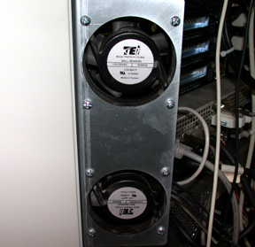
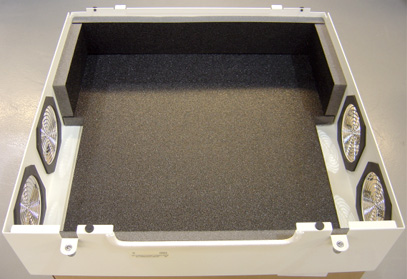
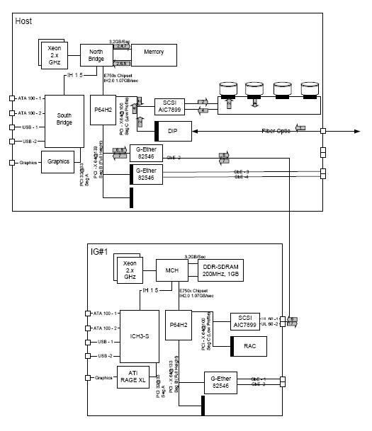

Operating Documentation
Direction 5193755-800, Rev# 8
BrightSpeed (Ltd. Access) Service Methods - Adv
Operating Documentation |
| Last Revised on: | June 2, 2008 |
This module contains the following subsections:
Section 1 - Overview (All-In-One Console)
Section 2 - Host computer
Section 3 - Image Generation (IG) Computer
Section 4 - Reconstruction Acceleration Card (RAC)
Section 5 - Power
Section 6 - Intercom Component
Section 7 - SCSI Tower
Section 8 - Cooling Package
Section 9 - Service and Diagnostics
Section 10 - Console Block Diagrams
The All-In-One Console consists of the following components.
Host Computer - incorporates the Scan Data Disks and CDIP board from DARC Node in the previous console GRE/GOC4. There is no DRAC node presence in AIO (All-In-One) console.
Image Generator (IG) - Is the same as the previous console version GRE/GOC4. IG is an option for AIO (All-In-One) console and only applicable when using Fluoro Option.
Intercom - Is the same as previous console version GRE/GOC4.
Cooling Package, including:
Fans
Front and Rear Covers with Foam Insulation
Air Filter
For AIO console, Host computer receives raw data from the Data Acquisition System (DAS) through an on-board Data Interface processor (CDIP) card, and stores that data in the Scan Data Disks located in the Host computer. The raw data is then delivered from the scan data disks in the Host PC to the IG processes in Host PC or in IG node. The IG processes then create images (If IG node is installed, IG computer creates images using on-board processors and Recon Accelerator Cards (RAC)). The images generated are saved in image disk in host computer.
Though each IG node will have a floppy boot disk, the host computer should be capable of booting IG node via Gigabit Ethernet, using Serial Over LAN (SOLAN) functionality.
The host computer for the All-In-One console will be an off-the-shelf, Linux-based system, which meets EMC requirements per CISPR 11.
Key performance specification of the AIO console are:
Recon times: 6 fps @ 2D BP
Latency: < 5.0 seconds
Image Matrix: < 512 x 512 pixels
2D BP: hardware and software support
3D BP: not yet supported
Host Computer in AIO console not only provides the same functions as previous console GOC4, but also provides data acquisition and image reconstruction functions.
Host Computer controls all the AIO console functions and data flow, including actual image generation. Software in Host computer sends the reconstruction request, recognize the recon mode, timing, parameters, and data, and be able to generate the image set. The raw data is first restored from the disks. The Host Computer then creates an image set and requests image generation to the IG node (If presence) or IG process in Host Computer. While most of the software components (e.g. Recon_Control, Data_Restore, Image_Buffer, and Data_Acq) reside on Host Computer, the components related to image generation are calculated on the IG node. If IG node is not presence, the components related to image generation also reside on Host Computer.
Main data flow of the Host Computer is described as follows:
Receive raw data from the Gantry
Store the raw data to the scan data disks
Restore the raw data from the scan data disks and transfer to IG node over GB Ethernet. If IG node is not presence, the raw data will be transferred to buffer memory in Host Computer.
Take multi-image streams from the IG node and save them on image disk in host computer.
If IG is not presence, images stream will be got from Image generation process ran on Host computer, and be saved on image disk in Host Computer.
The Host Computer is comprised of the following:
HP computer: a computer using a high-performance PC workstation
System disk: the OS and Applications software are stored on this disk
Image disk: Images are stored on this disk
Scan data disks: the raw data are stored on two scan data disks.
CDIP card: the DAS Interface Processor card
Gigabit Ethernet (GbE) cards
DVD-ROM drive: will be used for software installation and stand-alone use
Floppy drive: a 3½” floppy drive will be used for BIOS flash, if necessary
SCSI card: used to connect SCSI tower
Graphics board: connect to two LCD monitors
The Host Computer will take advantage of a standard, off-the-shelf motherboard, using dual microprocessors to increase processing density. The Host Computer will use very high performance general-purpose processors, memory, and a server motherboard with GB Ethernet and SAS port(s), and power supply.
Dual Processors: Intel ® Xeon™ Quad Core processors or successor
Memory: Min. 8GB FBD DDR2-667 REG ECC DIMM
Onboard SAS Devices: four (4) SAS ports reside on mother board
Seven (7) PCI/PCI-X/PCI-E expansion slots.
SLOT 1 PCI: Dual ultra SCSI card
SLOT 2 PCI-E: graphics card
SLOT 3 PCI-E: Open
SLOT 4 PCI-E: Open
SLOT 5 PCI-X: CDIP card
SLOT 6 PCI-X: Dual Port Gigabit Ethernet Card
SLOT 7 PCI-X: Dual Port Gigabit Ethernet Card
The chassis is a standard EIA 19" x 4U rack-mount with a max. depth of 20". The chassis have a cooling system capable of sufficiently dissipating heat created by the motherboard's dual processors.
Power Supply: ATX or SSI EEB compliant; input 100-120Vac / 200-240Vac, @ 50-60Hz, auto-detecting
There are four (4) SAS hard disk drives (146GB) in Host computer. Below are the definition of these four hard disk drives:
SAS0: System disk
SAS1: Image disk
SAS2: Scan data disk 1
SAS3: Scan data disk 2
Below are key performance specifications of the hard disk drives:
Minimum rotational rate of 15,000 RPM
SAS interface (3 Gigabits/second burst rate)
Formatted capacity of 146 Gigabytes
Form Factor: 3.5” half height form factor
The Scan Data Disks are connected to the mother board via internal SAS bus cable. To increase the disk read/write speeds software RAID0 (striping) is employed.
This PCI CDIP card supports almost the same functionality as the current DIP in that it converts the optical signal received from the Gantry into electrical raw data and writes that data to one of the double buffers on the card. When the received data count reaches a predetermined value it will switch over to the other buffer. The Host Computer then receives this data via the PCI bus. This card supports 64bit, 66MHz, PCI bus interface with an FPGA, and should be able to support 833MB/sec data rate optical fiber interface.
Optional IG node is to be connected to the Host computer via Gigabit Ethernet (GbE) card connected to one of the PCI-X slots.
Dual Gigabit Ethernet ports
10Base-T, 100Base-TX, 1000Base-TX IEEE802.3ab compatible
64bit, 66MHz (or higher) PCI-X interface
Low profile form factor
Gigabit Ethernet card ports definition is described below:
| Physical Port | Name | xw8400 |
| A (Right upper port) | HSP | eth2 |
| B (Right low port) | G1 (STC) | eth3 |
| C (Left Upper port) | IG1 | eth0 (master hostid) |
| D (Left low port) | G2 (TGP) | eth1 |
The DVD-ROM drive is used for software installation, system diagnostics, and to support stand-alone operation of the Host computer.
This 3½” floppy disk drive will be used for BIOS upgrades or for a boot disk, if necessary.
The Image Generator (IG) component mounts an FPGA accelerator card (RAC card) on a PCI-X slot. The IG node works under the Host computer's supervision as a very high performance image generation calculator. When an IG node receives an image generation request from the Host computer it will perform image generation processes. (i.e. preprocess, filtered back projection and post process, etc.) When an image set is calculated, the IG node notifies the Host computer and transfers the set of pixel image data to the Host computer via Gigabit Ethernet. IG node is connected to the Host computer directly, without a switching Hub.
The IG node consists of the following:
IG computer: computer using a high-performance PC server
RAC Card: Recon Accelerator Card plugged into a PCI-X slot in the IG computer
Floppy drive: a 3½” floppy drive will be used for BIOS flash, if necessary
The IG motherboard shall meet the following requirements:
Support Dual Intel® XeonTM Socket604 processors (2.8GHz minimum)
Onboard regulation of processor voltages
Intel® E750x chipset
533Mhz Front Side Bus (FSB)
Minimum of one (1) 10/100/1000 Mb onboard ethernet port
2.0GB DDR-266 SDRAM® memory using minimum two (2) 184-pin DIMM sockets
Support Serial Over LAN (SOLAN)
One (1) PCI-X expansion slot (100Mhz min.) accommodating a riser card
BIOS configuration shall be in accordance with details outlined in Appendix A of direction 2362872PSP
The IG shall include at least one (1) PCI-X expansion slot capable of accommodating a full-height “short” card.
This expansion slot shall contain a Recon Accelerator Card (GE Healthcare part no. 2316826).
The IG shall contain one (1) internal 3.5”, half-height, 1.44MB floppy diskette drive.
The IG does not require Ethernet ports in addition to the board-resident port.
Chassis type: Rack-mountable
Mounting orientation: Horizontal
Maximum chassis height: 1U (44.5mm/1.75”)
Maximum chassis width: 19” Rack standard
Maximum chassis depth: 508mm (20”)
Maximum weight: 10 Kg (22 lbs)
Internal signal and power harness drops must be sufficient to support maximum configuration above
Handles shall be mounted at each side of the front of the chassis for ease of removal from a rack. Handles shall protrude no more than 20mm (3/4”) from the chassis front panel.
The IG shall include external switches and indicators on the chassis as follows:
A system pushbutton POWER ON/OFF switch which toggles system power ON or OFF when pressed or held.
A pushbutton system RESET switch accessible on the front of the chassis that re-initializes all internal hardware without cycling power to the IG (hard reset/soft boot).
LED indicators shall be accessible and visible on the front of the chassis as follows:
System power is ON - steady GREEN - labeled “I/O”
System error - flashing or steady RED - labeled “FLT”
LAN Activity - flashing GREEN - labeled “LAN”
This “low-profile” PCI card accelerates the two-dimensional (2D) back-projection process of the GOC4 and is plugged into a 64bit, 66MHz (533MB/sec) PCI-X slot on the IG node.
This parallel beam back-projector provides the GOC4 the ability to off-load the back-projection application from general-purpose processors to fully programmable hardware. This option dramatically increases the reconstruction performance per cost ratio.
Following are the high-level CTQs for the RAC card:
Perform 2D parallel beam back-projection at >6fps
PCI-X low-profile compatible
Communicate with IG computer through a go => complete protocol
Support PCI and Mailbox interrupts
Reconstruct any image matrix size up to 524,288 32bit pixels
In-system programmable FPGA design via software download
The major elements of the RAC card consist of:
Field Programmable Gate Array (FPGA)
QDR™ SRAM - creates two blocks of memory
FLASH Memory - contains the FPGA's configuration code
The Host computer and optional IG node are each powered by an AC switching power supply internal to each chassis. Each node receives its AC power from a 120Vac single-phase outlet box internal to the console chassis.
A redundant power supply and/or UPS option does not need to be supported by each node. The NGPDU will provide 120Vac to the operator's console. The switching power supply internal to each node is required to allow ±5% stability.
These AC switching power supply in each node shall be SSI EPS12V, SSI EPS1U, SSI EPS2U, or ATX compliant.
SSI EPS12V: 24-pin for motherboard, 8-pin +12V for processor, 4-pin for peripherals
SSI EPS1U: 62-pin edge finger for 1U chassis server
SSI EPS2U: 24-pin for motherboard, 8-pin +12V for processor, 4-pin for peripherals
ATX: standard PC power supply, 20-pin for motherboard, 4-pin for peripherals
The table below lists the node, power supply wattage, input port (max current), and output port.
| Power Supply | Wattage | Input Port | Output Port |
| Host Computer | 800W Max | Max 13.2 A @ 100-127 VAc | |
| IG Node | 300-350 W | 2.9A @ 120 Vac | 3.3V, 5.0V, +12V, -12V, 5VSB |
The intercom block has an audio amplifier circuit, enabling communication between the console operator and the patient on the table. This block also has sound source switching functionality.
The sound sources are:
Console microphone on the SCIM (Operator's voice)
Gantry microphone output (Patient's voice)
Auto-voice L and R (output from the host computer)
These sound sources are multiplexed by the TALK button on the SCIM and by the Auto-voice output itself. The selected output signal goes to the following devices, based on prioritized logic.
Table speaker
Console speaker on the SCIM
Auto-voice recording input on the host computer
Also refer to GOC4 Intercom Theory and Adjustments.
Two Bay External SCSI tower that is used on the Global Recon Engine Console. The tower will contain a MOD read/write device and a DVD-RAM drive.
Illustration 1: SCSI Tower (Exploded View)

| NOTE: | Click on the PDF icon below, to view the full version of the illustration. |
Media File 1: SCSI Tower (Exploded View)

The cooling package consists of three (3) components:
Fan Assembly
Front and Rear Covers, with Foam, for sound reduction and air flow control
Air Filter
The Fan Assembly has perpendicular mounted larger fans than the GOC3 consoles. The Individual Fans are FRUs.
The Front and Rear covers are equipped with Insulating Foam, to both deaden noise and direct air flow for proper cooling.
The Air Filter is designed to capture room contaminates. It needs to be periodically cleaned (during a regular PM cycle).
The following diagrams illustrate the Cooling Package Components.
Illustration 2: Console Cooling Fans

Illustration 3: Console Rear Cover, with Foam

The AIO console supports two types of diagnostic, power-on test and offline test. The power-on test is a subset of offline test. This test sweeps devices condition and checks the motherboard and some devices BIST results at system power-on after OS booted. The offline test checks each device condition, interface, and environment more strictly.
AIO console supports some kind of diagnostic tools.
Motherboard diagnostics, including memory test
DIP diagnostic
RAC BIST and/or diagnostic
Scan Data Disk diagnostic
Network / connectivity test
Assemblies are assigned as FRUs based on the likelihood of need for replacement and fixed-right- first-time (FRFT). The following is a breakdown of AIO Console FRUs:
Host Computer
CDIP Board
Hard disk drive
IG (optional)
intercom
SCSI Tower
Data Flow Dictionary
Gantry -> DIP: Serial data receive from a fiber optic interface
DIP -> Disk: Scan Data Store
Disk -> Recon Control: Offset Data
Disk -> Data Restore: View Data
Recon Control -> IG process on host (or optional IG computer): Calibration Data, offset vector, tables, parameters
Data Restore -> IG process on host (or optional IG computer): If IG computer exists, view Data transfer from the Host to IG over gigabit Ethernet. Otherwise, data transfer between software processes within host computer.
IG process -> Image Buffer Create: Pixel image data and small header are transferred from the IG process in host or in optional IG computer to image buffer create process in Host.
Image Create -> Image DB: DICOM image data and are transferred from the image buffer create process to image DB in host.
Illustration 4: AIO console Detail Hardware Level Data Flow

| NOTE: | Click on the PDF icon below, for a PDF version of the above illustration. |
Media File 2: AIO console Detail Hardware Level Data Flow

Media File 3: AIO console Interconnect Diagram